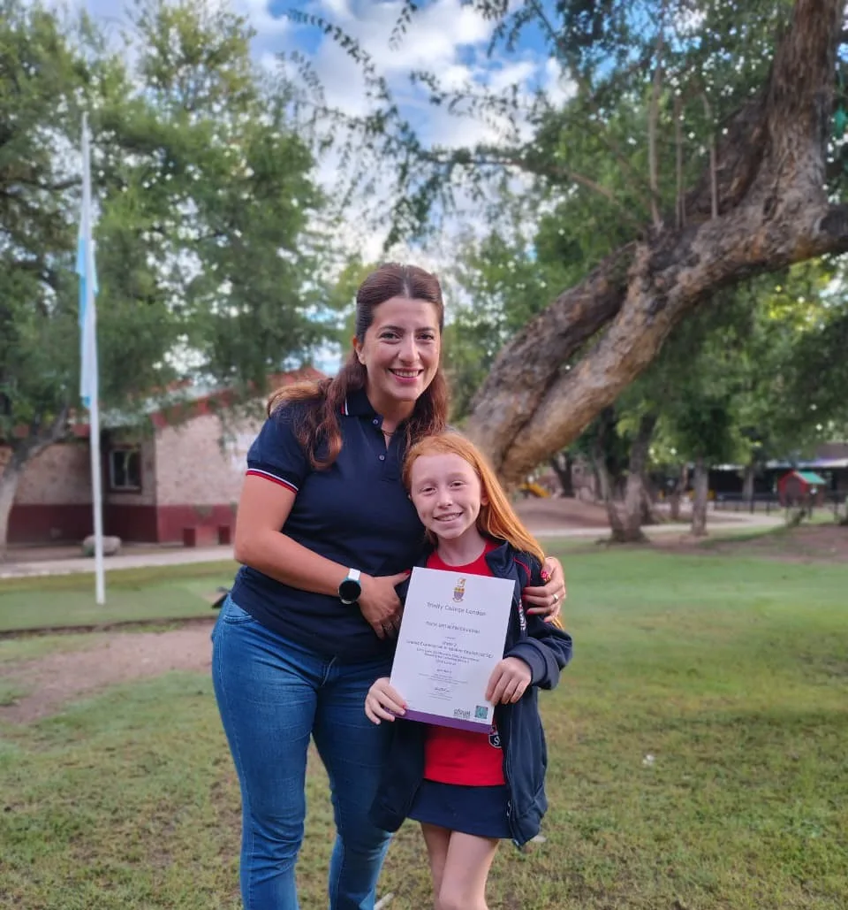

Listening
Desarrollamos la comprensión auditiva mediante propuestas dinámicas y situaciones reales de comunicación.

Desde los primeros años promovemos la comprensión y la comunicación oral en inglés, incorporando gradualmente la lectura, la escritura y el desarrollo de competencias lingüísticas cada vez más complejas.
Propuestas adaptadas a cada edad y nivel, con docentes especializadas y materiales actualizados.
 Objetivos progresivos que motivan y guían el aprendizaje desde el Nivel Inicial hasta Secundario.
Objetivos progresivos que motivan y guían el aprendizaje desde el Nivel Inicial hasta Secundario.
Desarrollamos estudiantes seguros, autónomos y capaces de comunicarse con confianza.

Desarrollamos la comprensión auditiva mediante propuestas dinámicas y situaciones reales de comunicación.
Fortalecemos la expresión oral para que los estudiantes hablen con confianza y naturalidad.
Promovemos la comprensión lectora a través de textos adaptados y literatura en inglés.
Desarrollamos la producción escrita para comunicar ideas con claridad y precisión.
Lectura, teatro, proyectos creativos y actividades colaborativas que enriquecen el aprendizaje.
Aprender inglés también implica comprender otras culturas y ampliar horizontes.
Preparamos a nuestros estudiantes para rendir exámenes reconocidos a nivel mundial desde los primeros años de escolaridad.
TRINITY COLLEGE LONDON
2.° y 3.° grado
Evaluaciones centradas en la comunicación oral con examinadores nativos.
We prepare for
Cambridge English Qualifications| Primaria | Secundaria | |
|---|---|---|
| 4.° grado | Starters | A2 Key (KET) |
| 5.° grado | Movers | B1 Preliminary (PET) |
| 6.° grado | Flyers | B2 First (FCE) |
C1 Advanced (CAE) |
Durante dos semanas los estudiantes participan de clases junto a jóvenes de distintos países, fortaleciendo sus habilidades comunicativas en un entorno internacional real.
Buscamos que cada estudiante desarrolle las herramientas necesarias para comunicarse con confianza en un mundo cada vez más global.
SOLICITÁ UNA ENTREVISTA ›